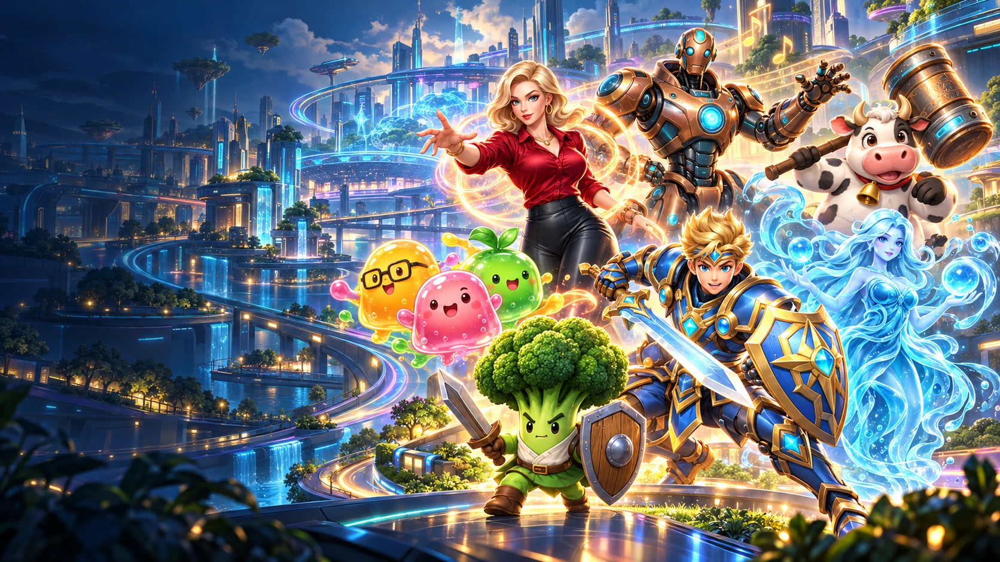
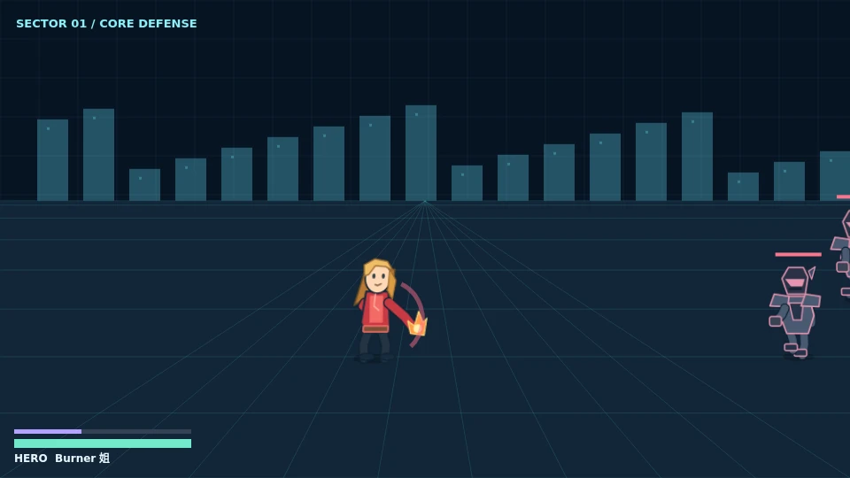
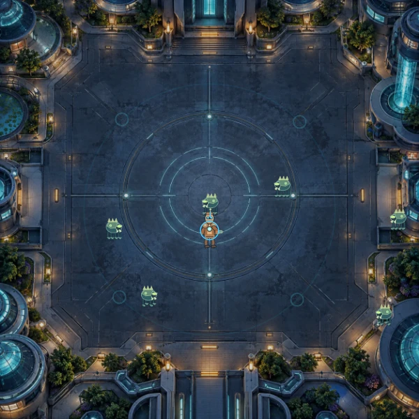
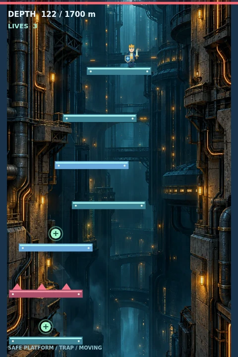
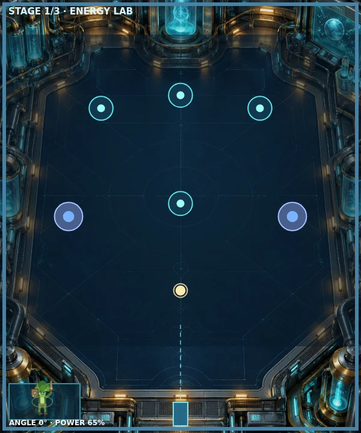
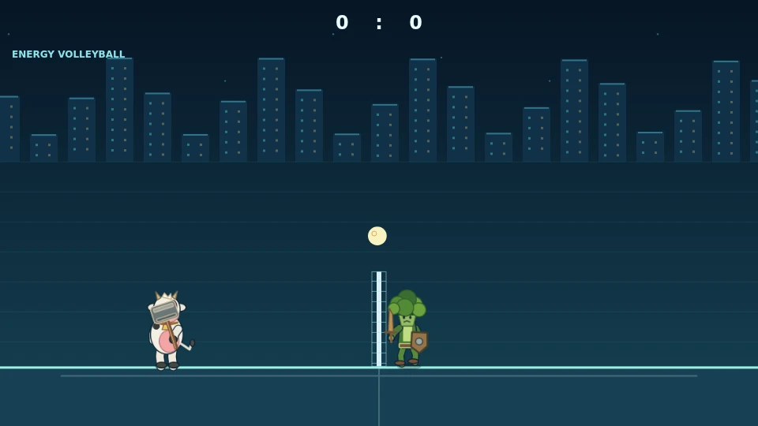
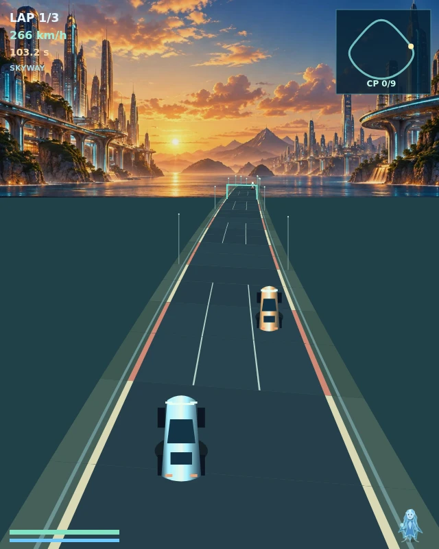

BIO-CITY / GAMES & EXPERIENCES物語の次は、
物語の次は、
あなたの出番。
6つのゲームと7組のヒーロー。アクション、防衛、スポーツ、レースから、今日の冒険を選ぼう。PCでもスマートフォンでも楽しめます。
ゲームセンターへ06 ゲーム07 ヒーローチームPC / スマートフォン

01 / CHOOSE YOUR CHALLENGE
ロビーと自己ベストを見る 今日は、どの冒険へ？
選んだゲームの準備画面で、操作方法・ヒーロー・難易度を確認できます。

G01 / ACTIONガーディアン大乱闘
7組のヒーローでコンボと専用スキルを使い、ボスに挑む。
ヒーローと遊び方→
G02 / DEFENSE都市防衛戦
移動、射撃、回避。3つのウェーブから生命都市を守る。
ヒーローと遊び方→
G03 / PLATFORM極限階段
足場を選んで下へ進む。長い落下とトラップに気をつけよう。
ヒーローと遊び方→
G04 / PHYSICSエナジーマーブル
角度とパワーを調整し、反射する球で3ステージを攻略。
ヒーローと遊び方→
G05 / SPORTSエナジー競技場
バレーボールと卓球。異なるルールでコンピューターと対戦。
ヒーローと遊び方→
G06 / RACING超高速レース
自動加速の街を駆け抜け、9つのゲートを通って3周を完走。
ヒーローと遊び方→02 / ORIGINAL GUARDIAN ASSAULTオリジナル都市防衛戦開く＋
これまでの防衛戦もここに。7組のヒーローと3つの難易度で、敵の波と最終ボスに挑めます。
ゲームを読み込み中…
03 / DECISION LAB
日常の意思決定ラボ
仕事、時間、画面利用、資源配分などの日常シナリオから選択傾向を振り返ります。
意思決定分析を読み込み中…
ゲームと質問は架空の娯楽体験です。健康状態や医療・心理的評価を示すものではありません。